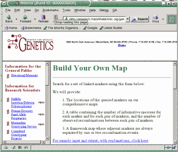
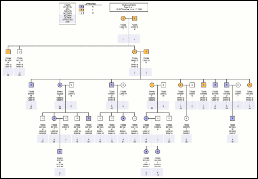
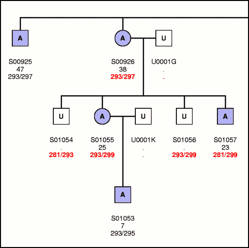
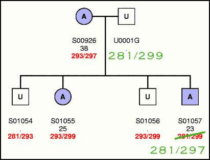
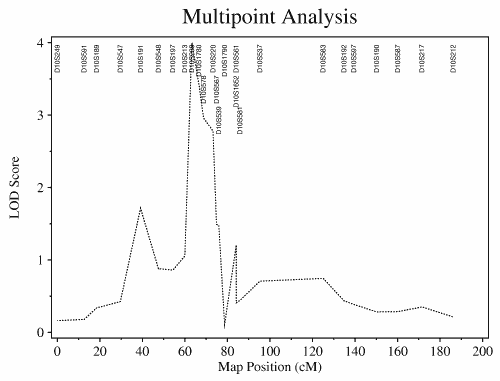
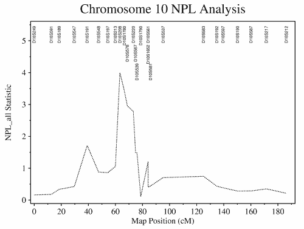

Madeline Version 0.935 Tutorial
by Edward H. Trager <ehtrager@umich.edu> (June 2004)
© 2004 by the Regents of the University of Michigan ALL RIGHTS RESERVED
Madeline Version 0.935 Tutorial
by Edward H. Trager <ehtrager@umich.edu> (June 2004)
© 2004 by the Regents of the University of Michigan ALL RIGHTS RESERVED
This tutorial will take you through the entire process of preparing and analysing a data set using Madeline.
The data used in this tutorial are based on a set of real data provided by Dr. Charles Krafchak of the Kellogg Eye Center in Ann Arbor that have been intentionally modified to better facilitate the didactic goals of this tutorial. The real data were used in the PPCD3 study by Shimizu et al. (A Locus for Posterior Polymorphous Corneal Dystrophy (PPCD3) Maps to Chromosome 10, American Journal of Medical Genetics (in press), 2004.
All the files mentioned in this tutorial
can be found in the tutorial subdirectory of the software
distribution. A number of the files have been placed in separate
subdirectories for clarity of presentation. In order to work through
the whole tutorial, copy each file as needed into a separate working
directory of your own creation. This tutorial assumes that you are
comfortable working from a UNIX/Linux command line environment.
The GeneticMaps subdirectory of the tutorial directory
contains two lists. For chromosome
10, there is a list of 26 markers (chr10markers.list).
For chromosome 20, there is a list of 27 markers (chr20markers.list).
A quick and convenient way to obtain reasonably good genetic maps for these markers is to use the Marshfield Clinic's Build Your Own Map online resource. After entering the desired chromosome number in the online form, simply copy and paste the list of markers into the form and press Submit Form.

The Marshfield server runs Crimap against their data and returns
comprehensive sex-averaged, male, and female maps to your browser.
Copy and paste the results into a file. Repeat the process for the
chromosome 20 markers. In the GeneticMaps subdirectory, we have saved
these two files as MarshfieldChr10FrameworkMap.txt and
MarshfieldChr20FrameworkMap.txt.
Now we can use Madeline's convert command to convert these
files to Madeline format. Here is the command and results for chromosome 10:
M>convert marshfield file 'MarshfieldChr10FrameworkMap.txt' to 'chr10.map'
Converting input file "MarshfieldChr10FrameworkMap.txt"
to Madeline-formatted output files,
"chr10.map" and "chr10.map.mfh" ...
================
Converting file
================
This is a map of chromosome 10 markers ...
Converting Marshfield map ...
chr10.map created ...
================
Recognizing file
================
HEADER block spans lines 1 to 4.
DATA block spans lines 6 to 31.
Skipping a total of 5 lines at top.
There are 4 non-empty header lines and 26 data lines.
Data records are 102 bytes long.
# . Field Name Start End Length Prec. Space Type
---- ----------- ----- ----- ------ ----- ----- -----
1. CHROMOSOME 1 2 2 0 2 N
2. ORDINAL 5 6 2 0 1 N
3. MARKERNAME 8 15 8 0 7 C
4. POSITION 23 28 6 2 1 N
5. THETA 30 36 7 5 4 N
6. DISTANCE 41 45 5 2 5 N
7. POSITION_F 51 56 6 2 1 N
8. THETA_F 58 64 7 5 4 N
9. DISTANCE_F 69 73 5 2 5 N
10. POSITION_M 79 84 6 2 1 N
11. THETA_M 86 92 7 5 4 N
12. DISTANCE_M 97 101 5 2 1 N
Binary recognition header file ("chr10.map.mfh") written.
This appears to be a MAP TABLE which can be opened using:
load "chr10.map.mfh"
M>
Madeline converts the map table to chr10.map and
also creates a binary .mfh header file to go along
with it. chr10.map is a human-readable text file
whereas chr10.map.mfh is a binary index file that
Madeline uses as a guide to optimize table access. Madeline
typically requires that a .mfh accompany all
data files.
Notice how Madeline also provides you with recombination fractions in addition to the inter-marker distances. The recombination fraction and inter-marker distance on any given row in the table refer to that fraction and distance respectively between the current marker and the marker that follows on the next row in the map:
CHROMOSOME N ORDINAL N MARKERNAME C POSITION N THETA N DISTANCE N POSITION_F N THETA_F N DISTANCE_F N POSITION_M N THETA_M N DISTANCE_M N 10 1 D10S249 2.13 0.11168 11.36 4.63 0.05320 5.34 0.00 0.16739 17.41 10 2 D10S591 13.49 0.05488 5.51 9.97 0.01530 1.53 17.41 0.09397 9.51 10 3 D10S189 19.00 0.10013 10.15 11.50 0.12218 12.47 26.92 0.07249 7.30 10 4 D10S547 29.15 0.08662 8.75 23.97 0.10950 11.13 34.22 0.06837 6.88 10 5 D10S191 37.90 0.07737 7.80 35.10 0.14281 14.69 41.10 0.01060 1.06 10 6 D10S548 45.70 0.06365 6.40 49.79 0.08458 8.54 42.16 0.04260 4.27 10 7 D10S197 52.10 0.05300 5.32 58.33 0.08468 8.55 46.43 0.02129 2.13 10 8 D10S213 57.42 0.03216 3.22 66.88 0.04289 4.30 48.56 0.02119 2.12 10 9 D10S208 60.64 0.03186 3.19 71.18 0.05320 5.34 50.68 0.01070 1.07 10 10 D10S1780 63.83 0.02139 2.14 76.52 0.04270 4.28 51.75 0.00000 0.00 10 11 D10S578 65.97 0.04250 4.26 80.80 0.06375 6.41 51.75 0.02129 2.13 10 12 D10S220 70.23 0.01599 1.60 87.21 0.02139 2.14 53.88 0.01060 1.06 10 13 D10S567 71.83 0.01070 1.07 89.35 0.02149 2.15 54.94 0.00000 0.00 10 14 D10S539 72.90 0.02667 2.67 91.50 0.05320 5.34 54.94 0.00000 0.00 10 15 D10S1790 75.57 0.05181 5.20 96.84 0.05102 5.12 54.94 0.05320 5.34 10 16 D10S561 80.77 0.00000 0.00 101.96 0.00000 0.00 60.28 0.00000 0.00 10 17 D10S1652 80.77 0.01729 1.73 101.96 0.01280 1.28 60.28 0.02129 2.13 10 18 D10S581 82.50 0.08545 8.63 103.24 0.10702 10.87 62.41 0.07346 7.40 10 19 D10S537 91.13 0.22424 24.14 114.11 0.26860 30.01 69.81 0.16695 17.36 10 20 D10S583 115.27 0.08904 9.00 144.12 0.13367 13.70 87.17 0.04299 4.31 10 21 D10S192 124.27 0.04448 4.46 157.82 0.06699 6.74 91.48 0.02159 2.16 10 22 D10S597 128.73 0.09619 9.74 164.56 0.14630 15.07 93.64 0.04309 4.32 10 23 D10S190 138.47 0.09001 9.10 179.63 0.11661 11.88 97.96 0.06099 6.13 10 24 D10S587 147.57 0.10176 10.32 191.51 0.09570 9.69 104.09 0.11064 11.25 10 25 D10S217 157.89 0.12762 13.05 201.20 0.09599 9.72 115.34 0.15746 16.30 10 26 D10S212 170.94 . . 210.92 . . 131.64 . .
For Chromosome 20, notice that Marshfield reports D20S482 as being
a cryptic duplicate of GATA149E11 which is reported in the map.
It is therefore necessary to replace the word "unknown"
in the D number column with "D20S482" prior to running
Madeline's convert command:
Chromosome 20
Some of your markers are 'cryptic' duplicates.
Listed below: these duplicates with the marker on the map
'cryptic' duplicate marker on the map
GATA51D03 D20S482 GATA149E11 Unknown
Comprehensive genetic map (distances in Kosambi cM)
Marker D number Sex-averaged Female
1 AFM248yc5 D20S117 2.83 0.00 ...
3.42 0.51
2 AFMa131wf1 D20S199 6.25 0.51 ...
2.72 1.09
3 AFMa175vb1 D20S842 8.97 1.60 ...
0.56 0.00
4 AFM308we1 D20S193 9.53 1.60 ...
1.67 1.61
5 AFM234tf10 D20S889 11.20 3.21 ...
0.92 0.00
6 GATA149E11 Unknown 12.12 3.21 ...
4.53 3.21
7 AFM023ta1 D20S95 16.65 6.42 ...
. . . . . . .
. . . . . . .
. . . . . . .
Now the two map files can be combined into one file. In a text editor,
simply copy the rectangular table from chr20.map and paste
it at the bottom of chr10.map. Alternatively, here's one
way you could obtain the same result using simple UNIX commands:
cat chr10.map > chr10.20.map grep "^20" chr20.map >> chr10.20.map
If you want, you can run UNIX utilities or programs without ever quitting
Madeline using the system command, like this:
M> system 'cat chr10.map > chr10.20.map ; grep "^20" chr20.map >> chr10.20.map'
Note: To temporarily leave Madeline to complete interactive tasks outside of Madeline, just do this:
M> system 'bash'
... which starts a (Linux) bash shell. Just type "exit"
when you are ready to leave Bash and return to Madeline.
Now within Madeline simply run the recognize command on
the merged map file, "chr10.20.map". This creates the
.mfh guide file that is required before we can open and
manipulate the table:
M>recognize 'chr10.20.map'
Starting to recognize file "chr10.20.map" to "chr10.20.map.mfh" ...
HEADER block spans lines 1 to 4.
DATA block spans lines 6 to 58.
Skipping a total of 5 lines at top.
There are 4 non-empty header lines and 53 data lines.
Data records are 102 bytes long.
# . Field Name Start End Length Prec. Space Type
---- ----------- ----- ----- ------ ----- ----- -----
1. CHROMOSOME 1 2 2 0 2 N
2. ORDINAL 5 6 2 0 1 N
3. MARKERNAME 8 15 8 0 7 C
4. POSITION 23 28 6 2 1 N
5. THETA 30 36 7 5 4 N
6. DISTANCE 41 45 5 2 5 N
7. POSITION_F 51 56 6 2 1 N
8. THETA_F 58 64 7 5 4 N
9. DISTANCE_F 69 73 5 2 5 N
10. POSITION_M 79 84 6 2 1 N
11. THETA_M 86 92 7 5 4 N
12. DISTANCE_M 97 101 5 2 1 N
Binary recognition header file ("chr10.20.map.mfh") written.
This appears to be a MAP TABLE which can be opened using:
load "chr10.20.map.mfh"
M>
As Madeline suggests, let's try the load command
followed by a list map command:
M>load 'chr10.20.map.mfh' Marker maps based on chr10.20.map.mfh are now installed. M>list map for chromosome 20 Map Position (Kosambi cM) ----------------------------- Ch Or Marker Name Sex-avg. Female Male -- -- ----------- --------- --------- --------- 20 1 D20S117 2.8300 0.0000 5.4800 20 2 D20S199 6.2500 0.5100 11.4800 20 3 D20S842 8.9700 1.6000 16.2600 20 4 D20S193 9.5300 1.6000 17.3400 20 5 D20S889 11.2000 3.2100 19.4800 20 6 D20S482 12.1200 3.2100 21.2600 20 7 D20S95 16.6500 6.4200 27.0000 20 8 D20S115 21.1500 11.7800 30.6300 20 9 D20S189 30.5600 23.4400 37.7600 20 10 D20S186 32.3000 25.8400 38.8200 20 11 D20S604 32.9400 26.9100 38.8200 20 12 D20S66 34.2200 29.0500 38.8200 20 13 D20S910 35.5100 29.0500 42.0300 20 14 D20S852 36.5800 30.1200 43.1000 20 15 D20S104 37.6500 32.2600 43.1000 20 16 D20S98 37.6500 32.2600 43.1000 20 17 D20S875 38.7200 34.3900 43.1000 20 18 D20S118 39.2500 35.4600 43.1000 20 19 D20S912 46.7100 49.2100 44.2900 20 20 D20S195 50.8100 56.2800 45.4700 20 21 D20S107 55.7400 64.9700 46.6600 20 22 D20S119 61.7700 74.7500 49.0200 20 23 D20S178 66.1600 81.2700 51.4100 20 24 D20S196 75.0100 96.8200 53.7700 20 25 D20S100 84.7800 112.0300 58.0400 20 26 D20S171 95.7000 120.9100 71.5600 20 27 D20S173 98.0900 120.9100 76.0100 M>
OK, we now have genetic maps ready for use! The next step is to prepare the pedigree data.
Conceptually, the pedigree data can be divided into three parts:
In well-designed database systems, these three types of data are often stored in separate tables. A good system will provide ways for you to compile the data into files required for analysis. Madeline also provides functions to compile and merge these data components. These data and the functions to handle the data are described below.
In this example, the family structure, affection status, and age of diagnosis
data are contained in the familystructure.data file in the
FamilyStructure subdirectory. This file contains
columns for family ID, individual ID (STUDYID),
gender, father, mother, monozygotic and dizygotic twin status,
affection status, and age of diagnosis for affected individuals.
The single capital letters following the column labels in the header
of the file indicate the type of data that the column contains
(C=character, X=gender,
N=numeric):
FAMID C STUDYID C SEX X FATHER C MOTHER C MZTWIN C DZTWIN C AFFECTED C AGEDX N F0099 S00925 M U0001C U0001D . . A 47 F0099 S00926 F U0001C U0001D . . A 38 F0099 S00951 M U0001C U0001D . . A 45 F0099 S00973 F U0001I S00981 . . U . . . . . . . . . . . . . . . . . . . . . . . . . . . .
Since there are no twins present, the columns for MZTWIN
and DZTWIN contain nothing but dots "." as
a missing value indicator.
Note:
If twins were present, the first twin pair
would be coded using "A", the second pairing using
"B", and so on ...
In this file, the identifiers of sampled individuals begin with "S" while those of unsampled individuals begin with "U". This is not a requirement of Madeline --the program does not care how you label individuals, as long as labels are unique. This is however a useful labeling convention.
After running the recognize command, one can open the
pedigree table and create a drawing of the pedigree:
M>recognize 'familystructure.data' Starting to recognize file "familystructure.data" to "familystructure.data.mfh" ... HEADER block spans lines 1 to 9. DATA block spans lines 11 to 48. Skipping a total of 10 lines at top. There are 9 non-empty header lines and 38 data lines. Data records are 63 bytes long. The gender field has been identified. The individual, father, and mother ID fields have been identified. # . Field Name Start End Length Prec. Space Type ---- ----------- ----- ----- ------ ----- ----- ----- 1. FAMID 1 5 5 0 2 C 2. STUDYID 8 13 6 0 9 C 3. SEX 23 23 1 0 1 X 4. FATHER 25 30 6 0 9 C 5. MOTHER 40 45 6 0 9 C 6. MZTWIN 55 55 1 0 1 C 7. DZTWIN 57 57 1 0 1 C 8. AFFECTED 59 59 1 0 1 C 9. AGEDX 61 62 2 0 1 N Binary recognition header file ("familystructure.data.mfh") written. This appears to be a PEDIGREE TABLE which can be opened using: open "familystructure.data.mfh" M>open 'familystructure.data.mfh' 8. AFFECTED has 3 levels. Pedigree table "familystructure.data.mfh" opened with 38 records NOTE: Pedigree F0099 has 1 unconnected individual. Pedigrees reconstructed in 0.0000 seconds Checking simple Mendelian inheritance in nuclear families... : ============================================================== Inheritance inconsistency: PEDIGREE MOTHER FATHER MARKER -------------------------- -------- ------ ------ ------ ============================================================== ================================================ Summary of Mendelian Inheritance Inconsistencies by Marker ================================================ # MARKERNAME NUCLEAR FAMILIES ---- -------------------------------- ---------------- ------------------------------------------------ Inconsistencies present among 0 of 0 markers. ================================================ 1.FAMID Co__1 4.FATHER Co__4 7.DZTWIN Co__7 2.STUDYID Co__2 5.MOTHER Co__5 8.AFFECTED Co__8+ 3.SEX Co__3 6.MZTWIN Co__6 9.AGEDX Po__1 ----------------------------- --------- --------- --------- Pedigrees and Individuals Included Excluded Total ----------------------------- --------- --------- --------- Pedigrees ................... 1 0 1 Individuals ................. 38 0 38 + In database .............. 38 0 38 | + Attached .............. 37 0 37 | + Childless spouses ..... 0 0 0 | + Unattached ............ 1 0 1 + Not in database .......... 0 0 0 M>draw pedigrees for #true Drawing pedigree F0099, U0001B's subtree (subtree 1 of 1) ... Printing drawing scaled to 0.78. 1 pedigree in result set. M>
Notice above how the program identifies what it
considers to be core fields --including the affection status field--
with "C", while age of diagnosis, AGEDX,
is marked with "P" for phenotype. In this file
there are eight core fields and one phenotype field present. If
genotype fields were present, they would be designated with
"G".
If Madeline has been installed correctly, it should automatically
call gv or another Postscript viewing program to view
the resulting pedigree drawing, madeline.pedigree.ps:

This family structure and phenotype data will need to be merged with the genotype data. But first let's take a look at the genotype data:
Marker data are normally stored in a table format where each
row contains the alleles for one marker typed on one individual.
To see all of the genotypes for one individual, you have to scan
across multiple rows. In Madeline, this type of table is called
a decomposed table (In contrast, a composed table
contains all the genotypes for one individual in one row).
To make things simple, we have included
just two markers in the decomposed.sample file in
the DecomposedGenotypeData subdirectory:
STUDYID MARKERNAME ALLELE1 ALLELE2 S00925 D10S1652 293 297 S00925 D10S1780 232 238 S00926 D10S1652 293 297 S00926 D10S1780 232 238 S00951 D10S1652 0 0 S00951 D10S1780 232 232 S00973 D10S1652 293 295 . . . . . . . . . . . .
Madeline can quickly convert a decomposed table to the composed
format using the compose command. As always, you must
first recognize the table before you can perform any
other operation on it. Notice how the program recognizes what type
of table you are operating on, and even suggests you use the compose
command:
M>recognize 'decomposed.sample' Starting to recognize file "decomposed.sample" to "decomposed.sample.mfh" ... HEADER block spans lines 1 to 5. DATA block spans lines 7 to 60. Skipping a total of 6 lines at top. There are 5 non-empty header lines and 54 data lines. Data records are 35 bytes long. # . Field Name Start End Length Prec. Space Type ---- ----------- ----- ----- ------ ----- ----- ----- 1. FAMID 1 5 5 0 3 C 2. STUDYID 9 14 6 0 2 C 3. MARKERNAME 17 24 8 0 2 C 4. ALLELE1 27 29 3 0 3 N 5. ALLELE2 33 35 3 0 0 N Binary recognition header file ("decomposed.sample.mfh") written. This appears to be a DECOMPOSED TABLE which can be converted using: compose "decomposed.sample.mfh" M>compose 'decomposed.sample.mfh' to 'composed.sample' Composing "decomposed.sample.mfh" to "composed.sample" ... Composed file has been created (Remember to specify the Madeline ".mfh" files when merging composed tables with family structure or other tables) M>
Here's what the resulting composed.sample file looks like:
FAMID C STUDYID C D10S1652 C D10S1780 C F0099 S00925 293/297 232/238 F0099 S00926 293/297 232/238 F0099 S00951 . 232/232 F0099 S00973 293/295 232/236 F0099 S00976 285/293 232/232 . . . . . . . . . . . .
Notice above how alleles from the original file have now been combined
into genotypes separated by forward slash "/" characters.
You can probably guess that the next command to use is
called merge:
M>merge 'familystructure.data.mfh' , 'composed.sample.mfh' to 'merged.sample' in physical order
Physical order specified for merging fields
Merging 2 tables to "merged.sample" ...
Building field and record trees ...
Writing 38 records to merged.sample ...
Writing Madeline binary header file "merged.sample.mfh" ...
2 tables merged to merged.sample in 0.00 seconds
(Remember to use the Madeline ".mfh" file when opening the merged table)
M>
And voila! Here's what the merged file looks like:
FAMID C STUDYID C SEX C FATHER C MOTHER C MZTWIN C DZTWIN C AFFECTED C AGEDX N D10S1652 C D10S1780 C F0099 S00925 M U0001C U0001D A 47 293/297 232/238 F0099 S00926 F U0001C U0001D A 38 293/297 232/238 F0099 S00951 M U0001C U0001D A 45 232/232 F0099 S00973 F U0001I S00981 U . 293/295 232/236 F0099 S00976 F U0001C U0001D I . 285/293 232/232 F0099 S00981 F U0001C U0001D I . 293/297 232/238 F0099 S00989 M U0001C U0001D I . 285/297 232/232 F0099 S01031 F U0001E S00976 A 39 281/285 232/238 . . . . . . . . . . . . . . . . . . . . . . . . . . .
The data --family structure, phenotype, and genotype-- are now in a single
file. Since the merge command has already taken care of
creating the accompanying .mfh header file, we can now
open the data using open.
Since the merged.sample file that we prepared above
contains only two markers, we are now going
to switch and use the file complete.data in the
CompleteData subdirectory for the rest of the tutorial.
The necessary pre-processing steps of composition and merging have
already been completed for you, and the complete.data file
contains data on all chromosome 10 and chromosome 20 markers.
You will only need to run the recognize command since
the binary .mfh file has not been provided:
M>recognize 'complete.data' Starting to recognize file "complete.data" to "complete.data.mfh" ... ... Binary recognition header file ("complete.data.mfh") written. This appears to be a PEDIGREE TABLE which can be opened using: open "complete.data.mfh" M>open 'complete.data.mfh' 8. AFFECTED has 3 levels. Calculating allele frequencies for 10. D10S1652... Calculating allele frequencies for 11. D10S1780... Calculating allele frequencies for 12. D10S1790... ... Calculating allele frequencies for 61. D20S95... Calculating allele frequencies for 62. D20S98... Pedigree table "complete.data.mfh" opened with 38 records NOTE: Pedigree F0099 has 1 unconnected individual. Pedigrees reconstructed in 0.0100 seconds Checking simple Mendelian inheritance in nuclear families... : ============================================================== Inheritance inconsistency: PEDIGREE MOTHER FATHER MARKER -------------------------- -------- ------ ------ ------ INHERITANCE #0001: F0099 S00926 U0001G D10S1652 ============================================================== ================================================ Summary of Mendelian Inheritance Inconsistencies by Marker ================================================ # MARKERNAME NUCLEAR FAMILIES ---- -------------------------------- ---------------- 10. D10S1652 1 ------------------------------------------------ Inconsistencies present among 1 of 53 markers. ================================================ 1.FAMID Co__1 22.D10S220 Go_13 43.D20S171 Go_34 2.STUDYID Co__2 23.D10S249 Go_14 44.D20S173 Go_35 3.SEX Co__3 24.D10S537 Go_15 45.D20S178 Go_36 4.FATHER Co__4 25.D10S539 Go_16 46.D20S186 Go_37 5.MOTHER Co__5 26.D10S547 Go_17 47.D20S189 Go_38 6.MZTWIN Co__6 27.D10S548 Go_18 48.D20S193 Go_39 7.DZTWIN Co__7 28.D10S561 Go_19 49.D20S195 Go_40 8.AFFECTED Co__8+ 29.D10S567 Go_20 50.D20S196 Go_41 9.AGEDX Po__1 30.D10S578 Go_21 51.D20S199 Go_42 10.D10S1652 Go__1 31.D10S581 Go_22 52.D20S482 Go_43 11.D10S1780 Go__2 32.D10S583 Go_23 53.D20S604 Go_44 12.D10S1790 Go__3 33.D10S587 Go_24 54.D20S66 Go_45 13.D10S189 Go__4 34.D10S591 Go_25 55.D20S842 Go_46 14.D10S190 Go__5 35.D10S597 Go_26 56.D20S852 Go_47 15.D10S191 Go__6 36.D20S100 Go_27 57.D20S875 Go_48 16.D10S192 Go__7 37.D20S104 Go_28 58.D20S889 Go_49 17.D10S197 Go__8 38.D20S107 Go_29 59.D20S910 Go_50 18.D10S208 Go__9 39.D20S115 Go_30 60.D20S912 Go_51 19.D10S212 Go_10 40.D20S117 Go_31 61.D20S95 Go_52 20.D10S213 Go_11 41.D20S118 Go_32 62.D20S98 Go_53 21.D10S217 Go_12 42.D20S119 Go_33 ----------------------------- --------- --------- --------- Pedigrees and Individuals Included Excluded Total ----------------------------- --------- --------- --------- Pedigrees ................... 1 0 1 Individuals ................. 38 0 38 + In database .............. 38 0 38 | + Attached .............. 37 0 37 | + Childless spouses ..... 0 0 0 | + Unattached ............ 1 0 1 + Not in database .......... 0 0 0 1 INHERITANCE INCONSISTENCY M>
Let's take a look at what's going on here. When we opened the file above, Madeline first calculates allele frequencies using gene counting. Madeline does not take family relationships into account when calculating allele frequencies. Secondly, Madeline examines the file for various types of errors and warning conditions, including simple Mendelian inheritance errors on autosomal markers. As seen above, Madeline has discovered one Mendelian inheritance error and has reported it in red. The program prompt has consequently changed to reflect the number of warning and error conditions encountered:
1 INHERITANCE INCONSISTENCY M>
These warning and error conditions are also summarized in the log file,
madeline.err. In addition to the error, there is a note
about an unattached individual.
The first order of business is to examine the inheritance error. Fortunately, Madeline makes this task easy. In order to examine the problem, we first toggle off all markers, and then toggle back on only the ones with Mendelian inheritance issues. Here are the commands:
1 INHERITANCE INCONSISTENCY M>toggle off output flags for 10-62 1 INHERITANCE INCONSISTENCY M>toggle on output flags for _IsMendelianInconsistent 1 INHERITANCE INCONSISTENCY M>list fields 1.FAMID Co__1 22.D10S220 G 43.D20S171 G 2.STUDYID Co__2 23.D10S249 G 44.D20S173 G 3.SEX Co__3 24.D10S537 G 45.D20S178 G 4.FATHER Co__4 25.D10S539 G 46.D20S186 G 5.MOTHER Co__5 26.D10S547 G 47.D20S189 G 6.MZTWIN Co__6 27.D10S548 G 48.D20S193 G 7.DZTWIN Co__7 28.D10S561 G 49.D20S195 G 8.AFFECTED Co__8+ 29.D10S567 G 50.D20S196 G 9.AGEDX Po__1 30.D10S578 G 51.D20S199 G 10.D10S1652 Go__1 31.D10S581 G 52.D20S482 G 11.D10S1780 G 32.D10S583 G 53.D20S604 G 12.D10S1790 G 33.D10S587 G 54.D20S66 G 13.D10S189 G 34.D10S591 G 55.D20S842 G 14.D10S190 G 35.D10S597 G 56.D20S852 G 15.D10S191 G 36.D20S100 G 57.D20S875 G 16.D10S192 G 37.D20S104 G 58.D20S889 G 17.D10S197 G 38.D20S107 G 59.D20S910 G 18.D10S208 G 39.D20S115 G 60.D20S912 G 19.D10S212 G 40.D20S117 G 61.D20S95 G 20.D10S213 G 41.D20S118 G 62.D20S98 G 21.D10S217 G 42.D20S119 G 1 INHERITANCE INCONSISTENCY M>
Now let's toggle off a few other unneeded fields and draw
a pedigree drawing. Notice how AFFECTED has a little
plus sign, "+", next to it. This indicates that this
field will be used to shade the circles and squares on the pedigree
drawing. We can turn off the output flag
for this field without affecting the icon flag (represented
by the plus "+" sign):
1 INHERITANCE INCONSISTENCY M>toggle off output flags for 1,sex,father,mother,mztwin-affected NOTE: Core fields will be included in output if required by a specific "write" format regardless of toggle status. The "draw" command, in contrast, will respect the toggle settings for core fields. 1 INHERITANCE INCONSISTENCY M>list fields 1.FAMID C 22.D10S220 G 43.D20S171 G 2.STUDYID Co__1 23.D10S249 G 44.D20S173 G 3.SEX C 24.D10S537 G 45.D20S178 G 4.FATHER C 25.D10S539 G 46.D20S186 G 5.MOTHER C 26.D10S547 G 47.D20S189 G 6.MZTWIN C 27.D10S548 G 48.D20S193 G 7.DZTWIN C 28.D10S561 G 49.D20S195 G 8.AFFECTED C + 29.D10S567 G 50.D20S196 G 9.AGEDX Po__1 30.D10S578 G 51.D20S199 G 10.D10S1652 Go__1 31.D10S581 G 52.D20S482 G 11.D10S1780 G 32.D10S583 G 53.D20S604 G 12.D10S1790 G 33.D10S587 G 54.D20S66 G 13.D10S189 G 34.D10S591 G 55.D20S842 G 14.D10S190 G 35.D10S597 G 56.D20S852 G 15.D10S191 G 36.D20S100 G 57.D20S875 G 16.D10S192 G 37.D20S104 G 58.D20S889 G 17.D10S197 G 38.D20S107 G 59.D20S910 G 18.D10S208 G 39.D20S115 G 60.D20S912 G 19.D10S212 G 40.D20S117 G 61.D20S95 G 20.D10S213 G 41.D20S118 G 62.D20S98 G 21.D10S217 G 42.D20S119 G 1 INHERITANCE INCONSISTENCY M>draw pedigrees for _IsMendelianInconsistent Drawing pedigree F0099, U0001B's subtree (subtree 1 of 1) ... Printing drawing scaled to 0.79. 1 pedigree in result set. 1 INHERITANCE INCONSISTENCY M>
In this simple example, we have an inheritance problem on only one
marker in a single pedigree. While not really necessary here, you
can easily imagine the huge convenience that commands like
"toggle on output flags for _IsMendelianInconsistent"
and
"draw pedigrees for _IsMendelianInconsistent" provide
when dealing with larger data sets with
inheritance issues on multiple markers in numerous families.
Here's the fragment of the pedigree drawing where the inheritance issue occurs. Note how Madeline automatically highlights Mendelian inconsistencies in red:

Of course for real data, we might have to go back and examine
our gels to determine if a mistake was made when calling alleles.
In our example here, we'll just go back and look at our
original decomposed database table in the
DecomposedGenotypeData subdirectory
where D10S1652 is
shown with allele calls of 281 and 297 for individual
S01057:
. . . . .
. . . . .
. . . . .
F0099 S01055 D10S1780 232 240
F0099 S01056 D10S1652 293 299
F0099 S01056 D10S1780 238 240
F0099 S01057 D10S1652 281 297
F0099 S01057 D10S1780 232 232
F0099 S01058 D10S1652 295 297
F0099 S01058 D10S1780 236 238
F0099 S01059 D10S1652 289 293
. . . . .
. . . . .
. . . . .
If we correct this in our data file, then it becomes clear that we will have a system of four alleles and the unsampled father U0001G must be a heterozygote with alleles 281 and 299:

Madeline is extremely useful for detecting and cleaning up many
kinds of errors that can occur while preparing data sets for
analysis.
If this were a real project, we would want to use a program like
PedCheck or Merlin to look for additional types of
Mendelian inheritance errors, such as unlikely double crossovers,
that Madeline does not detect. Naturally Madeline's write
command can provide you with the file formats required by
these programs.
Now let's go back and examine the unattached individual:
M>view data SEX, AFFECTED, AGEDX, _PercentGenotyped for _IsUnattached
F0099 S01077 F U . 0
1 individual in 1 pedigree matched as follows:
Individuals .............. 1
+ In database ........... 1
| + Attached ........... 0
| + Childless spouses .. 0
| + Unattached ......... 1
+ Not in database ....... 0
M>
She is unaffected and we have no genotype data on her. Here's a similar command that would reveal the same information, albeit less concisely:
M>view record for _IsUnattached
S01077 in F0099 (rec. no. 24) * unconnected *
CORE FIELDS:
F0099 S01077 F ...... ...... . . U
PHENOTYPE FIELDS:
..
GENOTYPE FIELDS:
....... ....... ....... ....... ....... ....... ....... ....... .......
....... ....... ....... ....... ....... ....... ....... ....... .......
....... ....... ....... ....... ....... ....... ....... ....... .......
....... ....... ....... ....... ....... ....... ....... ....... .......
....... ....... ....... ....... ....... ....... ....... ....... .......
....... ....... ..... ....... ..... ....... ....... .......
1 individual in 1 pedigree matched as follows:
Individuals .............. 1
+ In database ........... 1
| + Attached ........... 0
| + Childless spouses .. 0
| + Unattached ......... 1
+ Not in database ....... 0
M>
Since we have no genotype data on her, we will ignore her. Will will want to verify that she is not included in output files for analysis.
Now that our pedigree data are to the best of our knowledge clean, we are ready to create files for analysis.
First we load the genetic maps table that we prepared earlier:
M>load 'chr10.20.map.mfh'
Marker maps based on chr10.20.map.mfh are now installed.
M>
If you have already opened the corrected pedigree data file, you will see a notice about how the genotype fields are now ordered according to this map. If not, go ahead and open the pedigree file now:
M>open 'complete.data.mfh' 8. AFFECTED has 3 levels. Calculating allele frequencies for 10. D10S1652... ... Calculating allele frequencies for 62. D20S98... Pedigree table "complete.data.mfh" opened with 38 records NOTE: Pedigree F0099 has 1 unconnected individual. Genotype fields now ordered according to current map Pedigrees reconstructed in 0.0000 seconds Checking simple Mendelian inheritance in nuclear families... : ============================================================== Inheritance inconsistency: PEDIGREE MOTHER FATHER MARKER -------------------------- -------- ------ ------ ------ ============================================================== ================================================ Summary of Mendelian Inheritance Inconsistencies by Marker ================================================ # CHR. RANK MARKERNAME NUCLEAR FAMILIES ---- ---- ---- -------------------------------- ---------------- ------------------------------------------------ Inconsistencies present among 0 of 53 markers. ================================================ 1.FAMID Co__1 22.D10S220 Go_12 43.D20S171 Go_52 2.STUDYID Co__2 23.D10S249 Go__1 44.D20S173 Go_53 3.SEX Co__3 24.D10S537 Go_19 45.D20S178 Go_49 4.FATHER Co__4 25.D10S539 Go_14 46.D20S186 Go_36 5.MOTHER Co__5 26.D10S547 Go__4 47.D20S189 Go_35 6.MZTWIN Co__6 27.D10S548 Go__6 48.D20S193 Go_30 7.DZTWIN Co__7 28.D10S561 Go_16 49.D20S195 Go_46 8.AFFECTED Co__8+ 29.D10S567 Go_13 50.D20S196 Go_50 9.AGEDX Po__1 30.D10S578 Go_11 51.D20S199 Go_28 10.D10S1652 Go_17 31.D10S581 Go_18 52.D20S482 Go_32 11.D10S1780 Go_10 32.D10S583 Go_20 53.D20S604 Go_37 12.D10S1790 Go_15 33.D10S587 Go_24 54.D20S66 Go_38 13.D10S189 Go__3 34.D10S591 Go__2 55.D20S842 Go_29 14.D10S190 Go_23 35.D10S597 Go_22 56.D20S852 Go_40 15.D10S191 Go__5 36.D20S100 Go_51 57.D20S875 Go_43 16.D10S192 Go_21 37.D20S104 Go_41 58.D20S889 Go_31 17.D10S197 Go__7 38.D20S107 Go_47 59.D20S910 Go_39 18.D10S208 Go__9 39.D20S115 Go_34 60.D20S912 Go_45 19.D10S212 Go_26 40.D20S117 Go_27 61.D20S95 Go_33 20.D10S213 Go__8 41.D20S118 Go_44 62.D20S98 Go_42 21.D10S217 Go_25 42.D20S119 Go_48 ----------------------------- --------- --------- --------- Pedigrees and Individuals Included Excluded Total ----------------------------- --------- --------- --------- Pedigrees ................... 1 0 1 Individuals ................. 38 0 38 + In database .............. 38 0 38 | + Attached .............. 37 0 37 | + Childless spouses ..... 0 0 0 | + Unattached ............ 1 0 1 + Not in database .......... 0 0 0 M>
Notice how the genotype "G" fields have now been renumbered
according to the genetic maps.
Note:
If you already had the pedigree table
open when you issued the load command, you can use
list fields to display the list of fields.
Since we are not going to use age of diagnosis in our analysis, we
want to toggle it off. Note that we can use the toggle
command without specifying off or on. When
we do this, fields that are "on" get turned "off", and vice versa. Also
note that we don't really have to capitalize the field names in a command
because the interpreter is not sensitive to capitalization:
M>toggle output flag for agedx Genotype fields now ordered according to current map M>list fields 1.FAMID Co__1 22.D10S220 Go_12 43.D20S171 Go_52 2.STUDYID Co__2 23.D10S249 Go__1 44.D20S173 Go_53 3.SEX Co__3 24.D10S537 Go_19 45.D20S178 Go_49 4.FATHER Co__4 25.D10S539 Go_14 46.D20S186 Go_36 5.MOTHER Co__5 26.D10S547 Go__4 47.D20S189 Go_35 6.MZTWIN Co__6 27.D10S548 Go__6 48.D20S193 Go_30 7.DZTWIN Co__7 28.D10S561 Go_16 49.D20S195 Go_46 8.AFFECTED Co__8+ 29.D10S567 Go_13 50.D20S196 Go_50 9.AGEDX P 30.D10S578 Go_11 51.D20S199 Go_28 10.D10S1652 Go_17 31.D10S581 Go_18 52.D20S482 Go_32 11.D10S1780 Go_10 32.D10S583 Go_20 53.D20S604 Go_37 12.D10S1790 Go_15 33.D10S587 Go_24 54.D20S66 Go_38 13.D10S189 Go__3 34.D10S591 Go__2 55.D20S842 Go_29 14.D10S190 Go_23 35.D10S597 Go_22 56.D20S852 Go_40 15.D10S191 Go__5 36.D20S100 Go_51 57.D20S875 Go_43 16.D10S192 Go_21 37.D20S104 Go_41 58.D20S889 Go_31 17.D10S197 Go__7 38.D20S107 Go_47 59.D20S910 Go_39 18.D10S208 Go__9 39.D20S115 Go_34 60.D20S912 Go_45 19.D10S212 Go_26 40.D20S117 Go_27 61.D20S95 Go_33 20.D10S213 Go__8 41.D20S118 Go_44 62.D20S98 Go_42 21.D10S217 Go_25 42.D20S119 Go_48 M>
We are going to create files for analyzing chromosome 10, so let's turn off all chromosome 20 markers:
M>toggle off output flags for chromosome 20 Genotype fields now ordered according to current map M>list fields 1.FAMID Co__1 22.D10S220 Go_12 43.D20S171 G 2.STUDYID Co__2 23.D10S249 Go__1 44.D20S173 G 3.SEX Co__3 24.D10S537 Go_19 45.D20S178 G 4.FATHER Co__4 25.D10S539 Go_14 46.D20S186 G 5.MOTHER Co__5 26.D10S547 Go__4 47.D20S189 G 6.MZTWIN Co__6 27.D10S548 Go__6 48.D20S193 G 7.DZTWIN Co__7 28.D10S561 Go_16 49.D20S195 G 8.AFFECTED Co__8+ 29.D10S567 Go_13 50.D20S196 G 9.AGEDX P 30.D10S578 Go_11 51.D20S199 G 10.D10S1652 Go_17 31.D10S581 Go_18 52.D20S482 G 11.D10S1780 Go_10 32.D10S583 Go_20 53.D20S604 G 12.D10S1790 Go_15 33.D10S587 Go_24 54.D20S66 G 13.D10S189 Go__3 34.D10S591 Go__2 55.D20S842 G 14.D10S190 Go_23 35.D10S597 Go_22 56.D20S852 G 15.D10S191 Go__5 36.D20S100 G 57.D20S875 G 16.D10S192 Go_21 37.D20S104 G 58.D20S889 G 17.D10S197 Go__7 38.D20S107 G 59.D20S910 G 18.D10S208 Go__9 39.D20S115 G 60.D20S912 G 19.D10S212 Go_26 40.D20S117 G 61.D20S95 G 20.D10S213 Go__8 41.D20S118 G 62.D20S98 G 21.D10S217 Go_25 42.D20S119 G M>
As a first pass, it makes sense to do a non-parametric multipoint analysis so that we don't have to make any assumptions about the mode of inheritance. There are a number of programs we could use: Genehunter, Allegro, Merlin, and Simwalk2 come immediately to mind. Since we have an extended pedigree, we should probably investigate its complexity before making a decision. Recall that the complexity of a pedigree is simply 2n-f where n=non-founders and f=founders.
Madeline's query functions operate at the level of the individual.
Nevertheless, Madeline provides a number of attributes,
such as _NumberInPedigree,
_NumberOfFounders, and
_Complexity, that tell you
about the pedigree as a whole:
M>view data _NumberInPedigree, _NumberOfFounders, _NumberOfNonFounders, _Complexity for _Complexity>=20
F0099 S00925 38 11 27 43
F0099 S00926 38 11 27 43
F0099 S00951 38 11 27 43
F0099 S00973 38 11 27 43
. . . . . .
. . . . . .
. . . . . .
F0099 U0001I 38 11 27 43
F0099 U0001J 38 11 27 43
F0099 U0001K 38 11 27 43
38 individuals in 1 pedigree matched as follows:
Individuals .............. 38
+ In database ........... 38
| + Attached ........... 37
| + Childless spouses .. 0
| + Unattached ......... 1
+ Not in database ....... 0
M>
Of course here we have but one pedigree, so everyone in our data set matched
the query criteria! If we had a column for the proband, PROBAND,
then the following query would be preferred, since it would return
just one row for each matching pedigree and we would be able to instantly
identify complex pedigrees across large data sets:
M>view data _Complexity for _IsProband and _Complexity>=20
Since the complexity of this pedigree is high, we are going to analyse it using
Simwalk2. For the Simwalk format, Madeline requires that
we execute a write locus file ... separately from the
write pedigree file ... command. Here is the first command:
M>write locus file to 'chr10.loc' in simwalk format
Locus file "chr10.loc" has been written.
And here is the second command. Since Simwalk2 is very finicky about file names, we try to keep the names very short:
M>write pedigree file to 'ped.dat' in simwalk format NOTE: Simwalk batch file, "BATCH2.DAT.ped.dat", has been created. Edit this file to change the parameters of your analysis. NOTE: Simwalk map file "ped.dat.map" has been created. Writing pedigree data to "ped.dat" Individual U0001A in pedigree F0099 has missing values for all genotype variables Individual U0001B in pedigree F0099 has missing values for all genotype variables Individual U0001C in pedigree F0099 has missing values for all genotype variables Individual U0001D in pedigree F0099 has missing values for all genotype variables Individual U0001E in pedigree F0099 has missing values for all genotype variables Individual U0001F in pedigree F0099 has missing values for all genotype variables Individual U0001G in pedigree F0099 has missing values for all genotype variables Individual U0001H in pedigree F0099 has missing values for all genotype variables Individual U0001I in pedigree F0099 has missing values for all genotype variables Individual U0001J in pedigree F0099 has missing values for all genotype variables Individual U0001K in pedigree F0099 has missing values for all genotype variables ----------------------------- --------- --------- --------- Pedigrees and Individuals Included Excluded Total ----------------------------- --------- --------- --------- Pedigrees ................... 1 0 1 Individuals ................. 37 1 38 + In database .............. 37 1 38 | + Attached .............. 37 0 37 | | + With data .......... 26 0 26 | | + Without data ....... 11 0 11 | | + Marked for exclusion 0 0 0 | + Childless spouses ..... 0 0 0 | + Unattached ............ 0 1 1 + Not in database .......... 0 0 0 M>
From the summary table it is evident that the unattached individual was not included. The unsampled individuals who are required to maintain the pedigree structure were included even though they have no genotype data.
Madeline creates files for Simwalk version 2. We used version 2.83
to prepare this tutorial.
As Madeline warns (in blue above),
we need to manually edit the control file,
BATCH2.DAT. Note that by default Madeline assumes
you want to do a non-parametric analysis (batch item #01).
At a minimum, we need to tell Simwalk the name of the
locus file (batch item #10). It might also be a good idea
to change the title to something more informative (batch item #03).
Other than these, it looks like Madeline got the rest correct
and the defaults are fine:
01 ! batch item number 3 ! analysis: 1=Haplotype; 2=LOD; 3=NPL; 4=IBD 5=Mistyping 02 ! batch item number 33 ! integer label for this run of the program 03 ! batch item number PUT YOUR ANALYSIS TITLE HERE 09 ! batch item number ped.dat.map ! name of map file 10 ! batch item number chr10.loc ! name of locus file 11 ! batch item number ped.dat ! name of pedigree file 12 ! batch item number F ! symbol for female (case insensitive) M ! symbol for male (case insensitive) 13 ! batch item number Y ! is trait listed in locus and pedigree files? 16 ! label for affected individuals A ! must match LOCUS and PEDIGREE files 18 ! batch item number 0 ! number of quantitative variables in pedigree file 48 ! batch item number 10000 ! number of unconditional simulations for p-values
Note that BATCH2.DAT is actually a symbolic link to a
uniquely-named file (BATCH2.DAT.ped.dat in this example).
This is done so that you can use Madeline to
produce multiple Simwalk files (for different chromosomes, for example) in
one directory without repeatedly clobbering the control file. The symbolic
link will always point to the latest control file that you created.
Once you have edited the control file, start Simwalk by typing
simwalk2 at your terminal's command prompt from within the
directory containing your Simwalk files:
%> simwalk2
Because of the complexity of the pedigree, expect to wait an hour or two before Simwalk is done.
With Madeline, you can quickly and easily obtain professional, publication-reay plots of analysis results:
Simwalk2 produces a number of brilliantly-named result files. The
file called STATS-33.ALL contains the overall results, while
the files named STATS-33.001, STATS-33.002, STATS-33.003...
and so on contain the individual results for each pedigree. In our
example data there is only one pedigree, so we only have STATS-33.001
and STATS-33.ALL which of course in this case provide the same results.
(For the impatient, we have provided the Simwalk2 results in the SimwalkResults
subdirectory). If you look at the result files, you'll see that we have some
pretty juicy results, so we definitely want to plot them.
In the case of Simwalk2, Madeline provides a streamlined way to convert the results files to Madeline format. This works for both parametric and non-parametric Simwalk2 results:
M>convert simwalk file 'STATS-33.ALL' to 'chr10.results'
Converting input file "STATS-33.ALL"
to Madeline-formatted output files,
"chr10.results" and "chr10.results.mfh" ...
================
Converting file
================
This appears to be an NPL analysis of chromosome 10 ...
Graphing files "chr10.results" and "chr10.results.map" created ...
=================
Recognizing files
=================
HEADER block spans lines 1 to 7.
DATA block spans lines 9 to 34.
Skipping a total of 8 lines at top.
There are 7 non-empty header lines and 26 data lines.
Data records are 68 bytes long.
# . Field Name Start End Length Prec. Space Type
---- ----------- ----- ----- ------ ----- ----- -----
1. MARKERNAME 1 10 10 0 5 C
1. MARKERNAME 1 10 10 0 5 C
2. POSITION 16 23 8 4 4 N
3. STAT_A 28 32 5 3 4 N
4. STAT_B 37 41 5 3 4 N
5. STAT_C 46 50 5 3 4 N
6. STAT_D 55 59 5 3 4 N
7. STAT_E 64 68 5 3 0 N
Binary recognition header file ("chr10.results.mfh") written.
This appears to be an ANALYSIS RESULTS TABLE which can be opened using:
graph open "chr10.results.mfh"
--------------------
Associated map file:
--------------------
HEADER block spans lines 1 to 4.
DATA block spans lines 6 to 31.
Skipping a total of 5 lines at top.
There are 4 non-empty header lines and 26 data lines.
Data records are 31 bytes long.
# . Field Name Start End Length Prec. Space Type
---- ----------- ----- ----- ------ ----- ----- -----
1. CHROMOSOME 1 2 2 0 2 N
2. ORDINAL 5 6 2 0 4 N
3. MARKERNAME 11 18 8 0 5 C
4. POSITION 24 31 8 4 0 N
Binary recognition header file ("chr10.results.map.mfh") written.
This appears to be a MAP TABLE which can be opened using:
load "chr10.results.map.mfh"
M>
Notice that Madeline creates both an analysis results table and an accompanying
map table based on the Haldane map provided in the Simwalk results.
Simwalk provides five different statistics called STAT A, B,
C, D and E.
We are now ready to graph the results.
For your convenience, in the SimwalkResults subdirectory we have also included the
chr10.results and chr10.results.map files created
in the previous step.
We can now use the various graph command options to plot the results.
Reading from the Simwalk results file or documentation, we see that
statistic A is most powerful at detecting linkage to a recessive trait,
statistic B is most powerful at detecting linkage to a dominant trait, and
statistics C, D and E are more general statistics indicating whether
a few founder-alleles are overly represented among the affecteds. Statistic E is
the NPL_all statistic from Genehunter and is the one we will plot
in this example.
Plotting a graph requires a table with a GraphPositionField for
the horizontal axis, and a GraphScoreField for the LOD scores on the
vertical axis.
Since Madeline assigns a label of "SCORE" to the GraphScoreField
by default, this is the first thing we change:
M>?GraphScoreField "SCORE" M>GraphScoreField="STAT_E" M>
We now use the graph load, open, and plot commands:
M>graph load 'chr10.results.map.mfh' Marker maps based on chr10.results.map.mfh are now installed. M>graph open 'chr10.results.mfh' Low=0.00 High=186.20 Range=186.20 Magnitude=1 Stt=0.00 End =190.00 NewRange=190.00 TickBasis=10.00 i=2 MajorTick is now 20.00 i=9 Adj. end: 190.00 rem=10 Low=0.11 High=4.00 Range=3.89 Magnitude=-1 Stt=0.10 End =4.00 NewRange=3.90 TickBasis=0.10 i=0 MajorTick is now 1.00 i=9 Adj. stt: 0.10 rem=0.1 M>graph plot Graph printed to "madeline.graph.ps" Calling external viewer using the command "gv madeline.graph.ps" ... M>
Here is our initial plot:

Notice that simply loading a genetic map using graph load
or load (these two commands are equivalent)
is all you have to do to get Madeline to place the "raining down" marker names
on the graph.
Now let's polish the plot a little. We need to add some white space at the top so that the "raining down" marker names don't intersect with the highest peak. It also wouldn't be a bad idea to provide a more informative title, change the vertical axis label, and end the horizontal axis at 190 instead of 200 to make the graph look more centered.
Let's lookup all the variables and commands related to graphing, so we won't get lost or mistype anything:
M>lookup 'graph'
graph is a command.
GraphAnnotations is an associative array. It accepts character string keys and maps them to character string values.
GraphDrawingFile is an internal variable. Its current value is "madeline.graph.ps".
GraphPositionField is an internal variable. Its current value is "POSITION".
GraphScoreField is an internal variable. Its current value is "STAT_E".
GraphTitle is an internal variable. Its current value is "Multipoint Analysis".
GraphXAxisLabel is an internal variable. Its current value is "Map Position (cM)".
GraphXAxisMajorTick is an internal variable. Its current value is 20.000.
GraphXAxisMaximum is an internal variable. Its current value is 200.000.
GraphXAxisMinimum is an internal variable. Its current value is 0.000.
GraphXAxisMinorTick is an internal variable. Its current value is 10.000.
GraphYAxisLabel is an internal variable. Its current value is "LOD Score".
GraphYAxisMajorTick is an internal variable. Its current value is 1.000.
GraphYAxisMaximum is an internal variable. Its current value is 4.000.
GraphYAxisMinimum is an internal variable. Its current value is 0.000.
GraphYAxisMinorTick is an internal variable. Its current value is 0.500.
M>
So here we go:
M>GraphDrawingFile="chr10.graph.ps" M>GraphTitle="Chromosome 10 NPL Analysis" M>GraphYAxisLabel="NPL_all Statistic" M>GraphXAxisMaximum-=10 M>GraphYAxisMaximum+=1.5 M>
Changing the name of the graph file (first assignment statement above) is optional. Notice the last two assignments. If you are familiar with C, C++, Perl or other programming languages, you may well have seen assignment statements of this form before. It would be just fine to do this:
M>GraphXAxisMaximum=190
... or, if you like typing a lot, even this:
M>GraphXAxisMaximum=GraphXAxisMaximum-10
... but Madeline also provides the
"+=" and "-="
(and also "*=" and "/=")
assignment operators
for expression brevity.
Here then is our revised plot:

There are a number of ways to embellish a plot using other
options of the graph command. Refer to the documentation for more information.
We hope you have enjoyed using Madeline in this tutorial. An analysis of the chromosome 20 data is left as an exercise. Enjoy!
2004.07.15.ET. End of document.